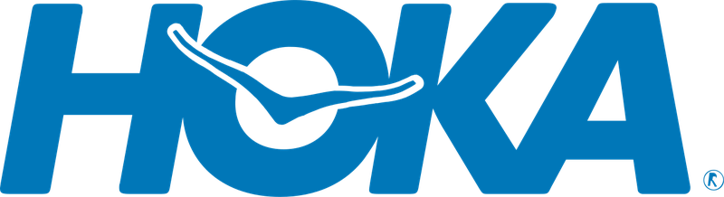

호카 오네 오네 Hoka
호카 오네 오네(Hoka)는 러닝화를 설계하고 판매하는 스포츠웨어 기업이다. 미드솔이 매우 두꺼운 이른바 '맥시멀리스트' 신발로 러닝 업계에서 처음 주목을 받았다.
최종 업데이트

호카 오네 오네는 어떤 브랜드인가
호카는 러닝화를 설계하고 판매하는 스포츠웨어 브랜드이다. 도로, 트레일, 모든 지형용으로 낮은 프로파일의 신발과 쿠션이 두꺼운 신발을 만든다.
미니멀리스트 신발이 인기를 얻던 흐름과 반대로 미드솔을 크게 키운 '맥시멀리스트' 신발을 내놓아 러닝 업계의 관심을 모았다. 처음에는 울트라마라톤 러너들이 이 신발을 받아들였고, 이후 다른 러너들 사이에서도 인기를 얻었다.
2013년부터 UGG, Teva 등 여러 신발 브랜드를 가진 Deckers Brands 소속이며, 2021년에 사명에서 One One을 떼고 Hoka로 바꿨다. 쿠션 대비 낮은 무게와 안정성, 효율적인 보폭을 돕는 설계를 제품 전반의 특징으로 유지한다.
호카 오네 오네는 어떻게 시작되고 성장했나
창업자는 Salomon 출신의 Nicolas Mermoud와 Jean-Luc Diard이다. 이들은 내리막을 더 빠르게 달릴 수 있는 신발을 만들고자 했고, 당시 다른 러닝화보다 쿠션이 많고 아웃솔이 큰 모델을 내놓았다.
브랜드 이름은 '날다'를 뜻하는 마오리어에서 따왔다. 초기에는 울트라마라톤 러너들이 쿠션과 안정성 때문에 이 신발을 받아들였고, 곧 최대 쿠션과 가벼운 무게를 찾는 다른 러너들에게도 퍼졌다.
2013년 4월 1일 Deckers Brands가 호카를 인수했다.
호카 오네 오네의 브랜드 아이덴티티는 무엇인가
미니멀리스트 흐름과 달리 두꺼운 미드솔의 '맥시멀리스트' 쿠션을 앞세우면서도 가벼운 무게와 안정성을 함께 추구한 러닝화 브랜드이다.
호카 오네 오네의 대표 제품과 서비스는 무엇인가
도로, 트레일, 모든 지형용으로 낮은 프로파일의 신발과 최대 쿠션 신발을 만든다. 제품 전반에 쿠션 대비 낮은 무게, 안정성을 돕는 미드솔과 아웃솔 형상, 효율적인 보폭을 위한 설계를 유지한다.
초기의 쿠션이 가장 큰 모델과 함께 더 가벼운 트레이닝화와 레이싱화, 트랙 스파이크도 라인업에 있다. 2016년에는 첫 중거리 스파이크인 Speed Evo R를 내놓았고, 스파이크를 좌우 비대칭으로 배치해 커브 구간 접지력을 높이도록 설계했다.
이 제품은 2016년 U.S. Olympic Trials에서 호카 후원 선수들이 착용했다.
호카 오네 오네는 지금 어떤 상태인가
호카는 UGG, Teva 등을 가진 Deckers Brands 산하 브랜드이다. 2021년 12월 22일 사명을 Hoka One One에서 Hoka로 바꾼다고 발표했다.
경량 트레이닝화와 레이싱화, 트랙 스파이크까지 라인업을 넓혔고, NAZ Elite 프로 훈련 그룹 등 러너를 후원한다.
호카 오네 오네 로고는 어떻게 변해왔나
자주 묻는 질문
호카 오네 오네는 어느 나라 브랜드인가요?
호카 오네 오네는 프랑스의 스포츠·아웃도어 브랜드입니다.
호카 오네 오네는 언제 설립되었나요?
호카 오네 오네는 2010년 설립되었습니다.
호카 오네 오네의 브랜드 아이덴티티는 무엇인가요?
미니멀리스트 흐름과 달리 두꺼운 미드솔의 '맥시멀리스트' 쿠션을 앞세우면서도 가벼운 무게와 안정성을 함께 추구한 러닝화 브랜드이다.
호카 오네 오네의 대표 제품은 무엇인가요?
도로, 트레일, 모든 지형용으로 낮은 프로파일의 신발과 최대 쿠션 신발을 만든다.
호카 오네 오네는 어느 기업이 소유하고 있나요?
호카는 UGG, Teva 등을 가진 Deckers Brands 산하 브랜드이다.
호카 오네 오네의 본사는 어디에 있나요?
호카 오네 오네의 본사는 프랑스에 있습니다(위키데이터 기준).
호카 오네 오네의 공식 웹사이트는 어디인가요?
호카 오네 오네의 공식 웹사이트는 https://www.hoka.com/ 입니다.
출처와 검증
호카 오네 오네 관련 참고: 공식 웹사이트 · 위키데이터 Q16908664 · 한국어 위키백과 · 영어 위키백과. 브랜드명은 한글과 원어를 함께 표기하되 데이터에 없는 표기는 만들지 않습니다. 기원 국가·설립연도는 검수된 정의문에서 확인된 값을 우선하고, 없을 때만 공식 웹사이트 URL이 일치하는 위키데이터 개체의 값을 씁니다. 위키데이터 값은 2026-11-03 기준입니다.